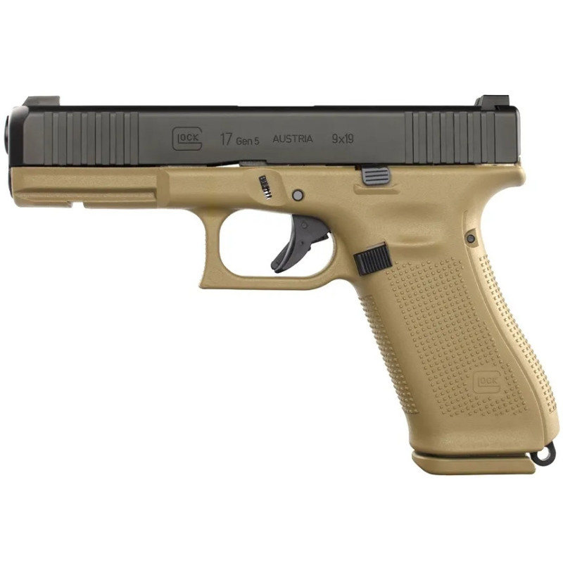

Le pistolet semi-automatique Glock17, de 5ème génération FR, est une
arme robuste, fiable et ergonomique.
Il est destiné à être utilisé en cas d'action rapide et de necessité
d'autoprotection.

Tir sur cible SC2 Fixe
| Distance | Cibles | Posture | Position de tir | Tir | Temps |
|---|---|---|---|---|---|
| 5m (1) | Unique | Patrouille basse (1) | Debout | Doublette ZLB | 4 s |
| 5m | Unique | Contact | Debout | Doublette ZLB | 2 s |
| 7m | Unique | Patrouille basse (1) | Debout | Doublette ZLB | 4 s |
| 7m | Unique | Contact | Debout | Doublette ZLB | 2,5 s |
| 10m | Unique | Contact | Debout | Doublette ZLB | 3 s |